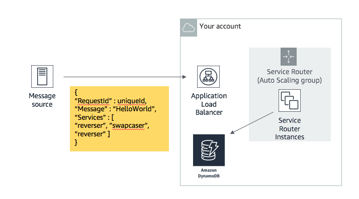
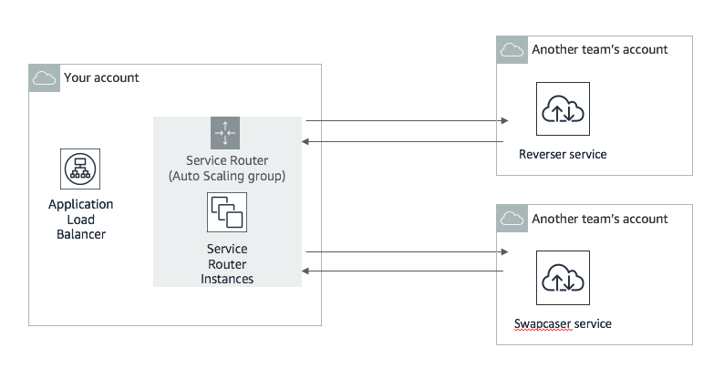
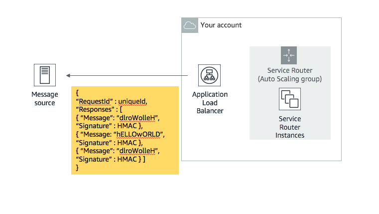
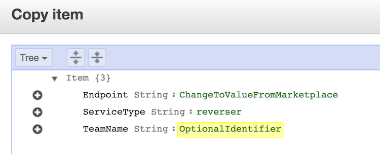

次世代アプリケーション開発のために、弊社では“ Microservices Mesh”アプローチを取っています。 すべてのチームはフロントエンドAPI（「サービスルーター」と呼ばれる）のコピーを持っています。サービスルータは他の社内チームのマイクロサービスを使用します。
あなたのチームは、実稼働検証中の多数のサービスルーターのうちの1つを運用しています。 サービスルータはデータ文字列を含むリクエストと、レスポンスを返す前に完了しなければならない処理のリストを受け取ります。
サービスルータは、受け取ったデータ文字列を各処理に必要なマイクロサービスに転送します。 サービスルータは、「service-table」と呼ばれるDynamoDBテーブルを参照することによって、これらのマイクロサービスエンドポイントを見つけます。
他のチームが使用できるようにマイクロサービスをデプロイし、保守、および最適化します。
ダッシュボードの入力フォームからサービスを公開できます。これによってあなたのマイクロサービスが、"Services Marketplace" に公開されます。
サービスルーターの可用性を高めます。Application Load BalancerとAutoscalingグループを利用することで、HA構成を取ることができます。
Services Marketplaceのリンクにアクセスして、最高のマイクロサービスを見つけ、それを使用してください(DynamoDBテーブルのデータを更新することで利用するマイクロサービスを変更できます。)。
自分のサービスを利用してはいけません。
全てのサービスを正常に稼働させ続けてください（X-Ray、CW Metrics、CW Logs利用しましょう）。score eventsをチェックして変化を確認してください。
点数を上げるためには、マイクロサービスのコピーを実行する必要があります。 他のチームのサービスルーターがリクエストを受け取ると、彼らは必要な処理の一部を実行するためにあなたのマイクロサービスを呼び出すかもしれません。その場合、彼らのスコアがあなたにシェアされます。
| サービス名 | タイプ | 説明 |
|---|---|---|
| swapcaser | SAM(Lambda と API Gateway) | サービスと説明 |
| reverser | Fargate | サービスと説明 |
| leeter | Elastic Beanstalk | サービスと説明 |
マイクロサービスが機能しているかどうかはどうすればわかりますか？
まず、このzipファイルで提供されている「testsvc」プログラムを使ってみてください。
これはあなたのマイクロサービスをテストし、正しく機能していない場合に問題点に関する情報を提供します。「testsvc」は他のチームのマイクロサービスをテストするのにも役立ちます。zipファイルには使用方法を記載したREADMEが含まれています。
次に、ダッシュボードの正しい入力フォームにサービスのエンドポイント(URL)を入力します。 Services Marketplaceは、登録されたサービスのヘルスチェックを行います。 もし、自分のサービスのレイテンシと成功率が0で、他のチームのサービスはうまく動いている場合は、自分のマイクロサービスを再確認する必要があります。
マイクロサービスへの実際のリクエストをシミュレーションする方法は?
このzipファイルで提供されているtestsvcプログラムを使用して、実際のユーザからのリクエストをシミュレートすることができます。 また、cURL、Httpie、Postmanなどを使用することもできます。次に例を示します。
curl -d '{"Message":"TestMessage"}' -H 'Content-Type: application/json' URI
#Or with HTTPie
http POST URI Message='TestMessage'
あなたのサービスルーターの構成図

サービスルーターは、DynamoDBの "service-table"テーブルから、メッセージの送信先を検索する
サービスルーターが使用するマイクロサービスを更新するには、DynamoDBテーブルを編集します。 多くのサービスを利用する必要がありますが、その中でも最も速いもののみを利用したいはずです。 ゲーム開始時に提供されるレガシーサービスは非常に遅いです。
サービスルーターは別のDevOpsチームのアカウントのマイクロサービスエンドポイントを呼び出す

他のチームからのレスポンスを受信すると、サービスルータは正しいペイロードを送信者に返す
メッセージには他のチームからの署名が含まれており、そのチームが一部の処理を実施したことが証明されます。 あなたのチームと利用したサービスを所持しているチームが得点を獲得します。

サービスディスカバリ:サービスルーターがメッセージの送信先を判断する方法
あなたのAWSアカウントには「service-table」のDynamoDBテーブルが事前に作成されています。 4つのレガシーサービスがすでに登録されていますが、これらは前のチームによって(解雇される前に)作成され、非常に低速です。
| DDB フィールド | 説明 | 必須 |
|---|---|---|
| Endpoint | サービスルータが使用できるマイクロサービスのURI | Yes |
| ServiceType | サービスの種類(reverser, swapcaser, leeter) | Yes |
| TeamName | どのチームがサービスを提供しているか(参考用) | No |
このテーブルに新しいサービスのitemを追加し、古い遅いサービスのitemを削除する必要があります。 これを行う簡単な方法は、古いitemを複製して、EndpointフィールドとTeamNameフィールドを変更することです。

サービスルーターの構築
ソースは下記のURLから取得できます。
https://s3.amazonaws.com/ee-assets-prod-us-east-1/modules/gd2018/assets/service-router.zip
サービスルーターを構築/再構築するには、Amazon Linux 2で以下のようなユーザーデータを使用します。 あなたのアカウントには、すでにこの方法で構築されたAutoscalingグループが付属しています。
#!/bin/bash
export AWS_DEFAULT_REGION=<region_the_game_is_running_in>
aws configure set region $AWS_DEFAULT_REGION
cd /home/ec2-user/
yum install -y unzip python-pip
curl -o xray.zip https://s3.amazonaws.com/aws-xray-assets.us-east-1/xray-daemon/aws-xray-daemon-linux-2.x.zip
#for ARM / a1 instances, use 'curl -o xray.zip https://s3.amazonaws.com/ee-assets-prod-us-east-1/modules/gd2018/assets/xray-arm.zip'
unzip xray.zip
chmod +x ./xray && nohup ./xray &
curl -o service-router.zip https://s3.amazonaws.com/ee-assets-prod-us-east-1/modules/gd2018/assets/service-router.zip
unzip service-router.zip
cd service-router
pip install -r requirements.txt
python service-router.py
ユーザーデータの仕組みについては下記をご覧ください。
https://docs.aws.amazon.com/AWSEC2/latest/UserGuide/user-data.html
Session Managerを使用してインスタンスにログインすることもできます。
https://console.aws.amazon.com/systems-manager/session-manager/
サイズ制限 サービスルータは大きくする必要はありません：
サービスルーターが正しく機能しているかどうかはどうすればわかりますか?
ブラウザでエンドポイントをテストします。DynamoDBテーブルから取得したサービスのリストである「Service Map」が表示されます。
例：
Service Map: {'reverser': ['http://reverser-url'], 'givemeasign': ['http://givemeasign-url'], 'swapcaser': ['http://swapcaser-url']}
サービスルーターの現在の挙動を確認するにはどうすれば良いですか?
サービスルーターはAWS X-RayとAmazon CloudWatch Logsと統合されています。
インスタンス / コンテナ / lambdaに 'PlayerInstanceProfile'または 'TEAMROLE' IAMロールがアタッチされている場合は、それらのサービスにメトリックとログが送信されます。
Cloudwatch Insightsを使用してサービスルーターのログからエラーを検索できます。
例:
fields @timestamp, status, message
| filter status not like /info/
| sort @timestamp desc
| limit 20
対話的にサービスルーターを実行/テストするにはどうすればよいですか？
EC2インスタンスに接続するにはセッションマネージャ（Systems Managerの一部）を使用します。 これを行うには、インスタンスのSSM Agentを更新する必要があります。セッションマネージャコンソールの指示に従います。
サービスルーターの実行のためのコマンド例:
sudo su ec2-user
cd /home/ec2-user/
cd service-router/
sudo python service-router.py
リクエストトレースを取得するために、xrayを利用することもできます。
xrayを実行するためのコマンド例:
curl -O https://s3.amazonaws.com/aws-xray-assets.us-east-1/xray-daemon/aws-xray-daemon-linux-2.x.zip
unzip aws-xray-daemon-linux-2.x.zip
nohup ./xray &
サービスルーターへの実際の要求をシミュレートする方法
cURL、HttpieあるいはPostman（GUI APIテストツール）を使って実際のユーザーのリクエストをシミュレートすることができます。
#curl https://curl.haxx.se/download.html:
curl -d '{"Message":"TestMessage","RequestId":"test","Services":["reverser","swapcaser"]}' -H 'Content-Type: application/json' URI
#curl (Windows escaping)
curl -d "{\"Message\":\"TestMessage\",\"RequestId\":\"test\",\"Services\":[\"reverser\",\"swapcaser\"]}" -H "Content-Type: application/json" URI
#Httpie https://httpie.org/
http POST URI Message='TestMessage' RequestId='test' Services:='["reverser","swapcaser"]'